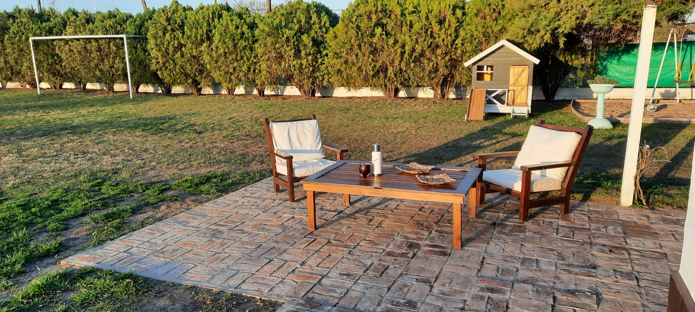
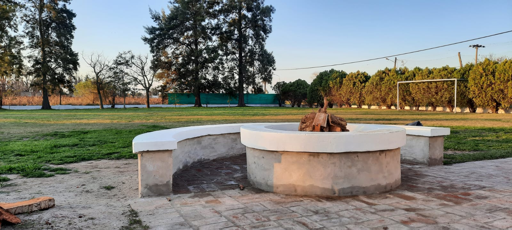

En Castel Verde, diseñamos cada servicio pensando en vos y en la importancia de cada momento especial. Nos enorgullece ofrecer una experiencia integral, donde la comodidad, el buen gusto y la naturaleza se fusionan para crear recuerdos inolvidables. Celebraciones Inolvidables Convertimos tus sueños en realidad. En Castel Verde somos expertos en la organización de todo tipo de eventos sociales, desde íntimos encuentros hasta grandes celebraciones. Ya sea un vibrante cumpleaños, la mágica unión de un casamiento o un emotivo aniversario, nuestro equipo se dedica a cuidar cada detalle. Disponemos de amplios espacios verdes y salones adaptables para que tu festejo sea exactamente como lo imaginaste, rodeado de la serenidad y belleza de la naturaleza. Nos encargamos de la ambientación, la coordinación y todos los pormenores para que vos solo te ocupes de disfrutar. Comedor: Sabores que Conectan Nuestra propuesta gastronómica en el comedor de Castel Verde es un viaje de sabores que rescata la esencia de nuestra herencia italiana, fusionada con lo mejor de la cocina local. Preparamos cada plato con ingredientes frescos y de calidad, pensados para deleitar a tus invitados y complementar la atmósfera de tu evento. Desde banquetes elaborados hasta opciones más informales, adaptamos nuestros menús a tus preferencias, garantizando una experiencia culinaria memorable para todos. En Castel Verde, cada servicio está diseñado para que tu experiencia sea única, tranquila y absolutamente perfecta.
Nuestros servicios
Espacio para comer

Nuestro campo es el lugar ideal para celebrar cualquier ocasión especial. Desde cumpleaños de 15 soñados y casamientos íntimos o multitudinarios, hasta cumpleaños infantiles llenos de diversión, tenemos el espacio y los servicios para que tu evento sea perfecto. Sabemos que cada celebración es única, y por eso ofrecemos un ambiente versátil que se adapta a tus necesidades.
Lugar de juegos

Sabemos que la buena comida es clave en toda celebración, por eso te ofrecemos diversas opciones para deleitar a tus invitados. En el exterior, encontrarás un asador con fogonero, perfecto para preparar un clásico asado argentino bajo el cielo abierto, creando un ambiente cálido y rústico. Pero eso no es todo. Para mayor comodidad o en caso de clima adverso, disponemos de un asador interno totalmente equipado. Y para los amantes de la cocina, nuestro horno de barro (o a leña, si aplica) es ideal para hornear pizzas caseras, panes o lo que se te ocurra, sumando un toque gourmet y divertido a tu evento. ¡Las posibilidades son infinitas para que tu banquete sea inolvidable!
La tranquilidad del campo
Nuestra cancha de fútbol no es solo para los amantes del deporte; es un espacio amplio y seguro que ofrece múltiples posibilidades para tu evento. Aquí, los niños pueden correr libremente, jugar y quemar energía al aire libre, sin preocupaciones. Además, su generosa extensión la convierte en el lugar ideal para instalar inflables de gran tamaño como toboganes gigantes o peloteros, transformando el área en un verdadero parque de diversiones. Es la garantía de risas y actividad para todos los invitados.
Un paisaje inolvidable
¡Zambullite en la diversión! Nuestra amplia pileta es el centro de la acción en cualquier evento. Perfecta para refrescarse en los días de calor y para que grandes y chicos disfruten al máximo. Al lado, nuestra barra de tragos te espera para que tus invitados se relajen y brinden bajo el sol o las estrellas. Es el espacio ideal para sumar un toque de frescura y alegría a tu celebración, creando momentos inolvidables para todos.